Im August haben wir endlich mal wieder einen All-Inclusive-Urlaub gemacht. Wir waren in der Türkei, genauer gesagt in Side, genauer gesagt in Evrenseki. Das liegt hier:
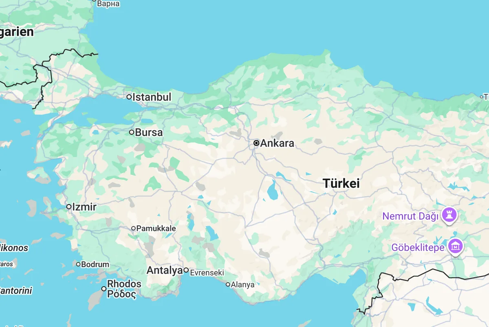
Wenn ich auf die Zeit dort zurückblicke, lässt sich die Reise am besten in fünf persönliche Highlights zusammenfassen. Und das erste Highlight hat uns direkt am allerersten Tag überrascht. Denn nachdem wir den ganzen Tag unterwegs waren, wollten wir eigentlich nur noch schlafen. Es kam jedoch alles ganz anders...
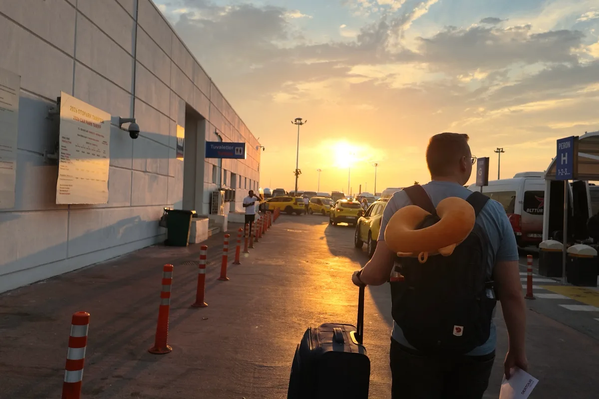
Das Hotel war anscheinend komplett ausgebucht und es war kein Standardzimmer mehr frei. Deshalb durften wir die erste Nacht in einer Suite verbringen! Außerdem gab es für uns auch noch ein kleines Abendbuffet.
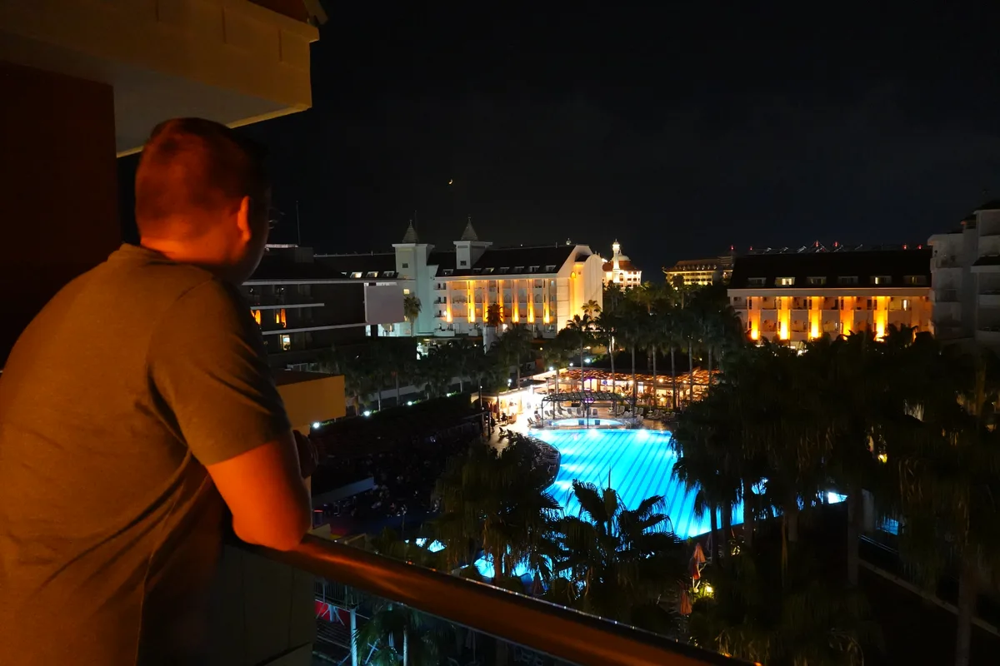
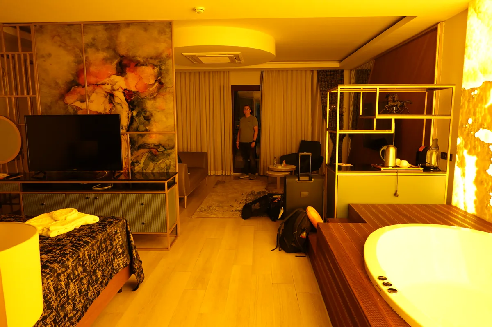
Naja, und beim Essen sind wir dann auch noch auf eine afrikanische Akrobatikshow aufmerksam geworden und befanden uns kurz darauf mittendrin; mit leckeren Cocktails in der Hand.
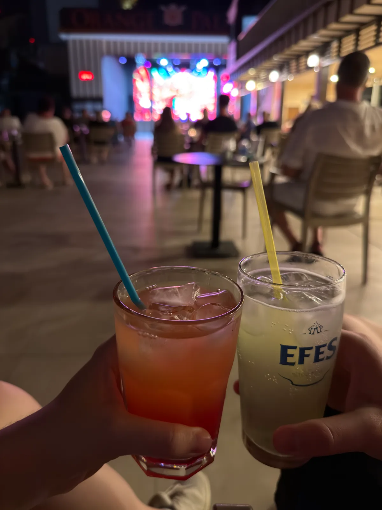
So kehrten wir erst gegen halb 12 in unsere Suite zurück. Aber wenn man schon mal die Chance hat, muss man sie natürlich auch nutzen. Also ließen wir noch den Whirlpool ein.
Bis das Wasser eingelassen war, brauchten wir zwar ziemlich viel Geduld und die Düsen hatten mir persönlich zu viel Power, aber wir haben den Luxus bis halb 1 ausgekostet. Es war auf jeden Fall eine interessante Erfahrung und eine Geschichte, die wir noch lange erzählen werden.
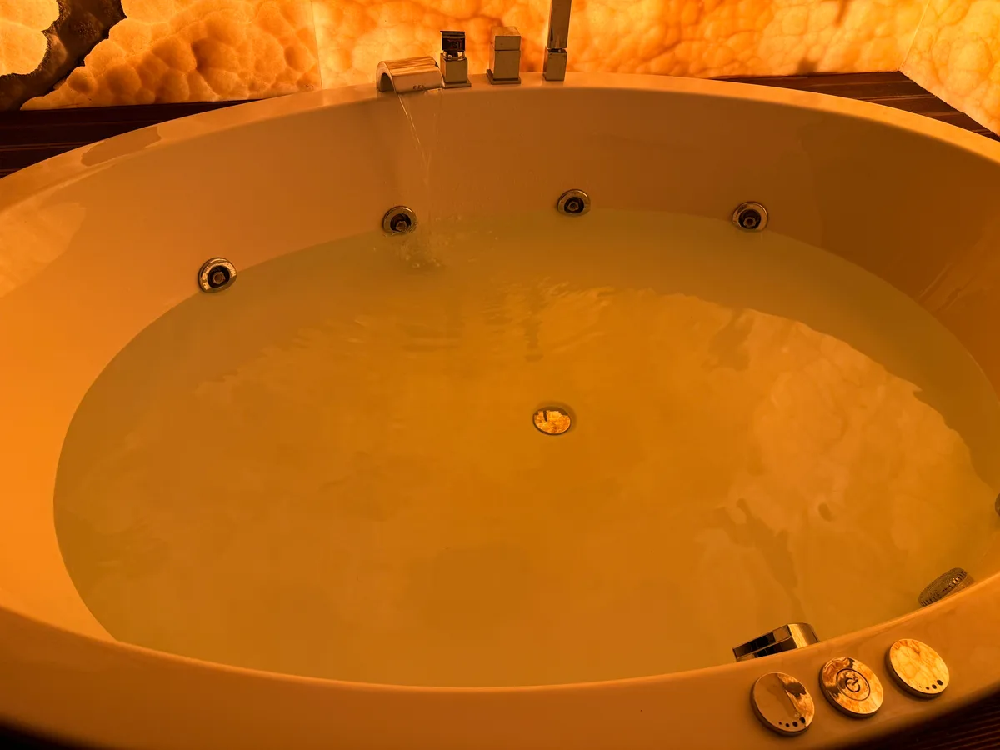
Nach unserer Tauchtour im letzten Türkei-Urlaub waren wir bei actionreichen Aktivitäten etwas skeptisch geworden. Damals ging es ohne lange Sicherheitseinweisung direkt unter Wasser. Aber wir entschieden uns doch, es zu wagen und buchten eine Rafting-Tour durch den Köprülü-Kanyon-Nationalpark.
Zu meinem Entsetzen gab es vor Ort traditionelle Alaturka-Toiletten. Also schon Toilettenkabinen, aber die Toilette war quasi ein Loch im Boden, wo man sich drüberhocken (?) musste. GOTT SEI DANK schaute ich noch einmal alle Kabinen durch und entdeckte dann doch noch eine ganz normale Toilette.
Und dann bekamen wir auch schon unsere Einweisung, Schwimmwesten, Helme und unsere Paddel.
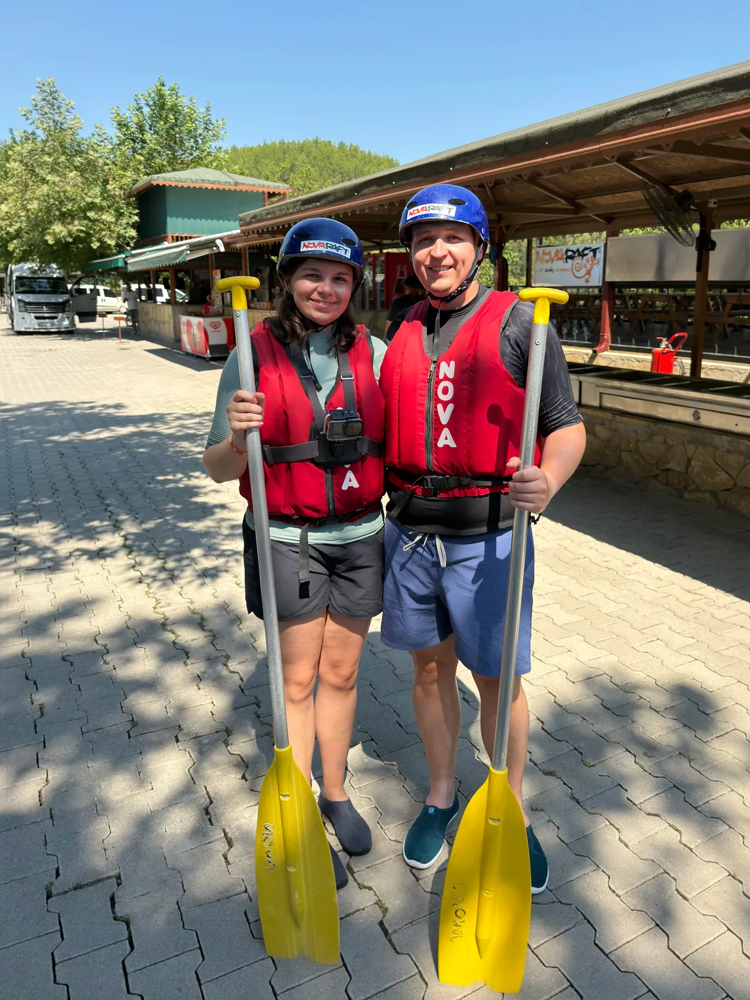
Beim Einsteigen ins Boot merkten wir dann schnell, dass die Wassertemperatur nicht ganz so warm war wie erwartet. Dass man sich während der Fahrt gegenseitig nassspritzen konnte, erschien uns – trotz knapp 40°C Außentemperatur – plötzlich gar nicht mehr so verlockend. Unser Guide erklärte uns dann unterwegs, dass das Wasser direkt vom geschmolzenen Schnee auf den Bergen kommt. Und so fühlte es sich auch an.
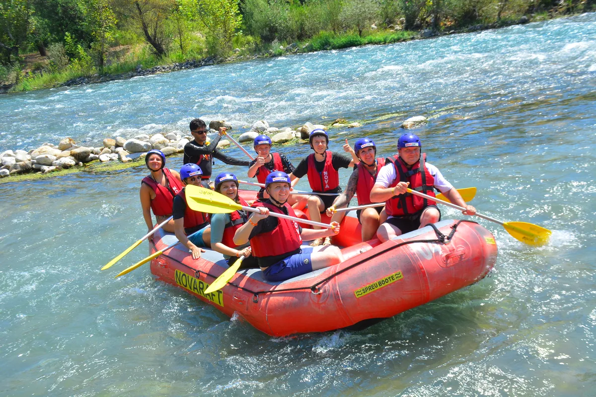
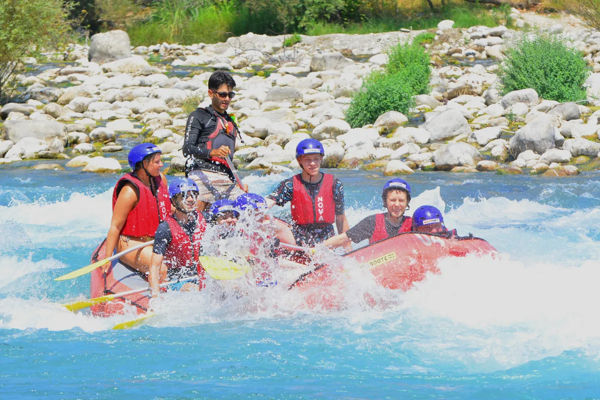
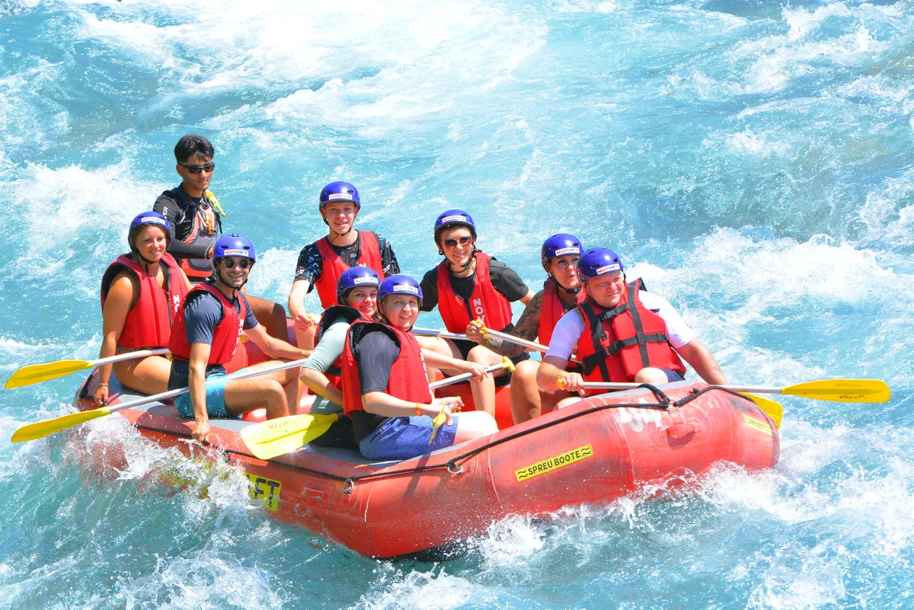
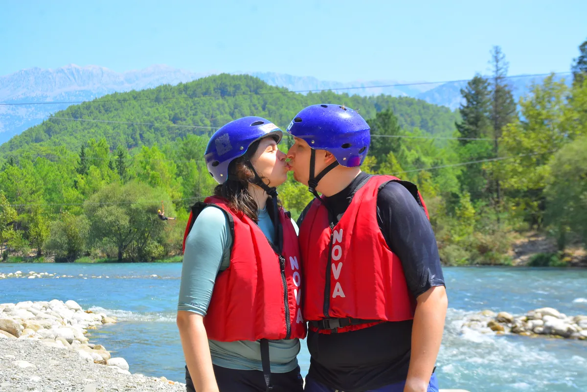
Trotzdem hat die Fahrt durch den Canyon richtig viel Spaß gemacht. Immer wieder ging es durch wilde Stromschnellen und wir bekamen große Ladungen Wasser ab. An den Badestopps haben wir uns dann doch mal vom Boot getraut und tatsächlich fühlte sich das Wasser am Ende sogar ganz angenehm an.
Die Tour ging insgesamt 2 ½ Stunden, die aber wirklich schnell vorbeigingen.
Ein echter Klassiker, den wir bis jetzt noch nie ausprobiert hatten: ein Hamam-Besuch. Wir haben direkt das Komplettpaket gebucht, das noch ein paar weitere Behandlungen beinhaltete. Zwei Tage später wurden wir mit einem Kleinbus abgeholt, in dem die gesamte Fahrt über lautstark Helene Fischer lief. Das Ziel war ein sehr abgelegenes Hamam mitten im Nirgendwo. Ein bisschen skurril war das Ganze im ersten Moment schon. Schließlich könnte man so auch sehr leicht Leute entführen. Man muss ja nur mit einem Kleinbus die Hotels abfahren, irgendwo steht immer jemand, der irgendeinen Ausflug gebucht hat.
Die Bedenken waren aber natürlich unbegründet.
Da wir unsere Latschen vergessen hatten, bekamen wir dort welche gestellt und ich muss sagen, allein das hat mich schon sehr zufriedengestellt. Ich hatte noch nie so bequeme Latschen an!
Wir wurden dann in den Wärmeraum gebracht. Alle lagen auf so warmen Marmorsteinen und wurden eingeseift und gewaschen. Bei mir begann die Behandlung mit einer Art Peelingtuch. Das war sehr schmerzhaft und ich war froh, als sie endlich fertig war. Danach tauchte die Dame eine Art Stoffbeutel in Seifenwasser, schlug Luft hinein und hüllte mich dann von oben bis unten in eine riesige, warme Schaumwolke ein. Das hat mich wiederum sehr überzeugt.
Anschließend ging es zur Fisch-Pediküre. Henning hat es nicht lange ausgehalten. Ich fand es eigentlich ganz witzig, habe die Fische aber immer sofort abgeschüttelt, sobald ich sie an meinen Füßen gespürt habe.
Mein Highlight war die anschließende Massage. Die ging 30 Minuten und war wirklich sehr entspannend. Ich bekam danach noch irgendwas ins Gesicht geschmiert und wurde dann zu Henning geführt, der schon am Schlammbad auf mich wartete.
Dort schmierten wir uns komplett mit Schlamm ein und mussten das dann trocknen lassen. Anscheinend ist das gut für die Haut. Wir hatten auf jeden Fall viel Spaß. Es war aber auch sehr schwer, den Schlamm danach wieder von der Haut runterzubekommen.
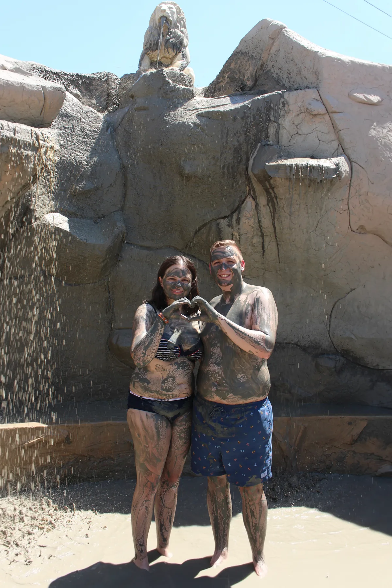
Alles in einem war es ein sehr interessantes Erlebnis!
Henning war eines Morgens laufen und entdeckte dabei die Schildkrötenbrücke. Und die heißt nicht nur so, da schwammen wirklich Dutzende große Wasserschildkröten! So spazierten wir am nächsten Morgen gemeinsam dahin und auch diesmal waren wieder viele Schildkröten zu sehen.
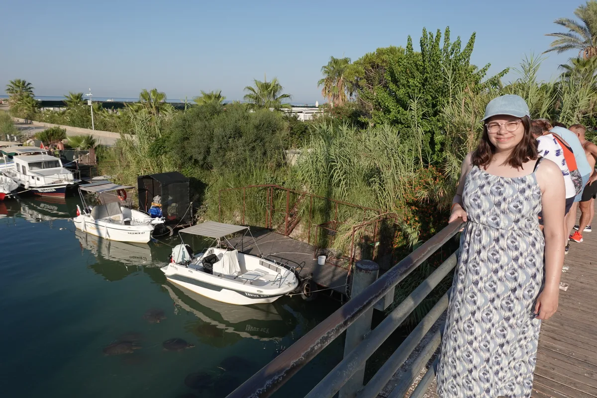
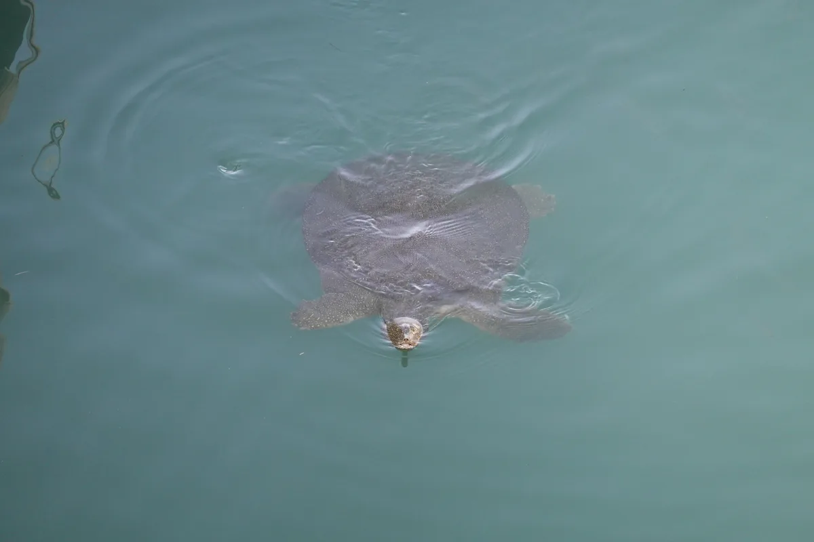
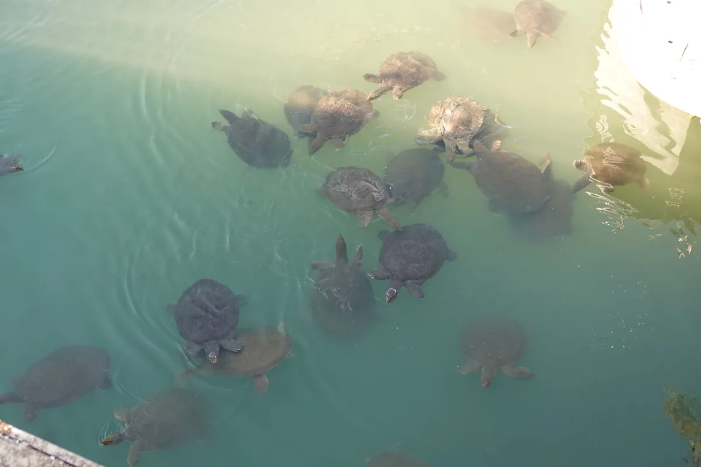
Am vorletzten Abend wollten wir uns noch unbedingt den Sonnenuntergang am Strand anschauen. Deshalb sind wir einfach etwas später an den Strand gegangen und haben dort auf den Sonnenuntergang gewartet. Es war richtig schön, im Meer zu schwimmen, während die Sonne langsam unterging.
Wir haben uns dann an den Strandduschen abgebraust, ich habe meine Haare in der Abendsonne getrocknet und dann machten wir noch ein paar schöne Fotos, die mich immer an einen ganz besonderen, ruhigen und gemütlichen Abend erinnern werden:
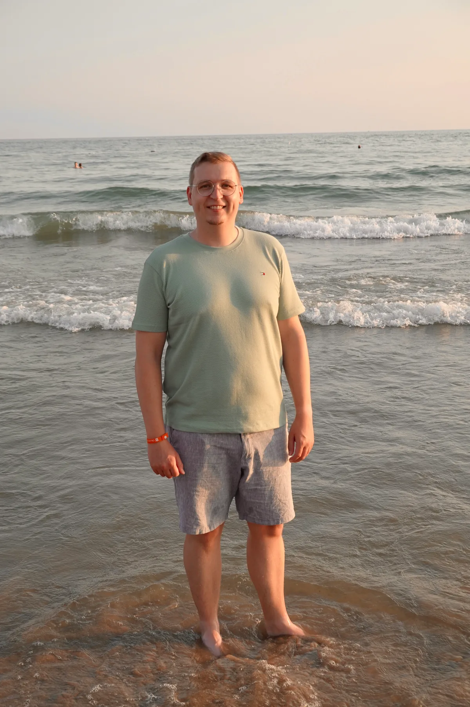
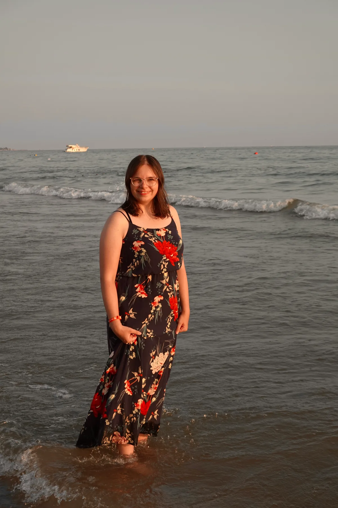
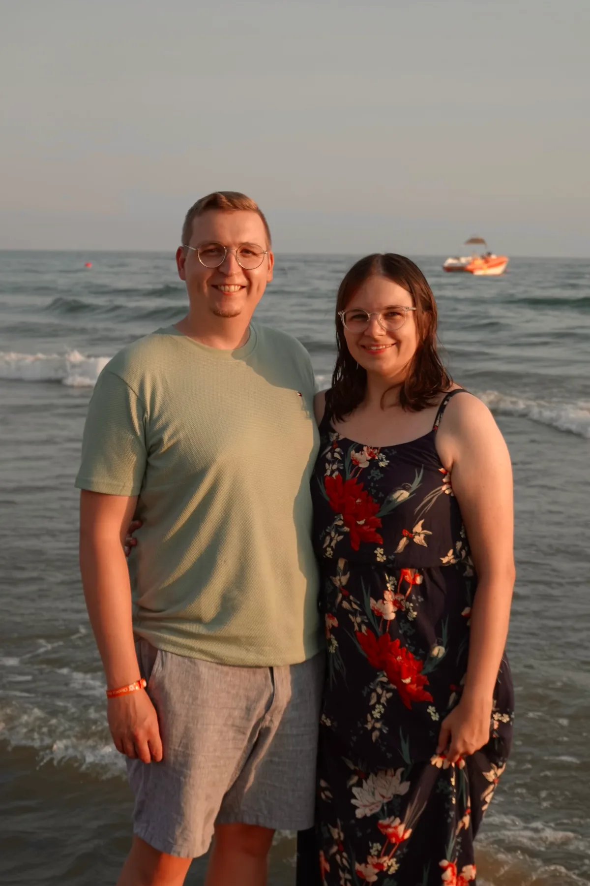
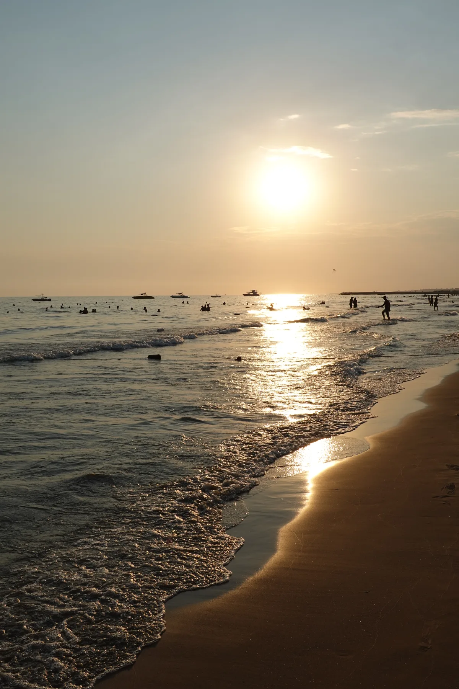
Natürlich gibt es von unserem Urlaub auch wieder ein Video, falls du wissen möchtest, was wir sonst noch so gemacht haben. Schau es dir gerne mal an: